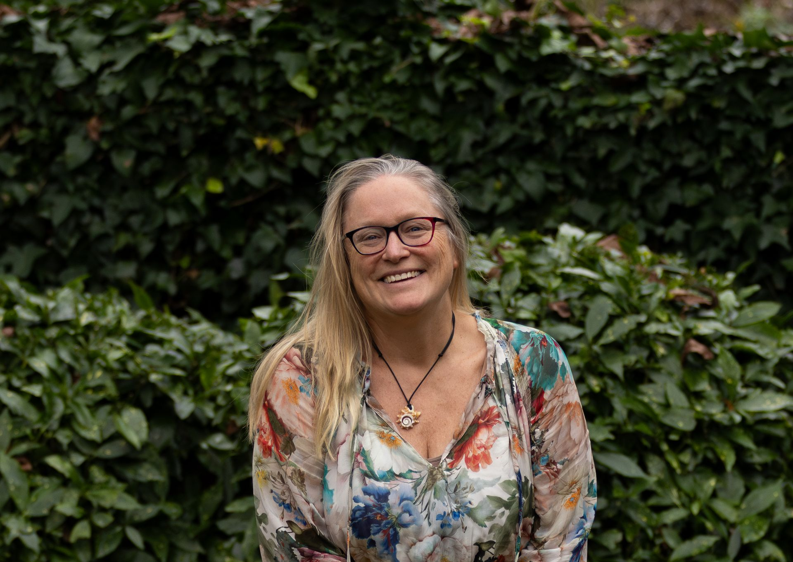

Mijn Visie
De mens als geheel zien
Na een carrière in het bedrijfsleven maakte ik bewust de stap naar coaching. In organisaties ontdekte ik hoe vaak de werkelijke dynamiek zich niet afspeelt in wat mensen zeggen, maar in wat voelbaar is tussen de regels door. Die fascinatie voor wat mensen beweegt, vormt voor mij nog altijd de basis van mijn werk.
Wat mij onderscheidt, is de combinatie van mijn ruime ervaring in het bedrijfsleven, mijn expertise als (emotie)coach en mijn jarenlange verdieping in Qigong, een eeuwenoude oosterse levensfilosofie. Ik werd jarenlang opgeleid in Qigong door Chinese leermeesters. Daar leerde ik mijn waarnemingsvermogen verder te ontwikkelen: juist niet alleen door te luisteren naar woorden, maar ook door aandacht te hebben voor signalen van spanning, emoties en de onderliggende dynamiek.
In mijn begeleiding kijk ik naar de mens als geheel. Ik combineer wetenschappelijk onderbouwde coachmethodieken met een sterk invoelende, persoonlijke benadering. Daarbij werk ik niet alleen met gedachten en gedrag, maar ook met emoties, het lichaam en de interactie met anderen. Juist de verbinding tussen denken, voelen en doen maakt verandering duurzaam.

Ik help professionals, teams en organisaties bewust waar te nemen wat er werkelijk speelt: in henzelf, in de samenwerking en in de onderstroom. Juist wanneer zichtbaar wordt wat eerder onzichtbaar bleef, ontstaat ruimte voor nieuwe inzichten, bewustere keuzes, meer verbinding en duurzame verandering.
“Ik geloof dat duurzame verandering niet begint met harder werken of meer doen, maar met anders leren waarnemen.”